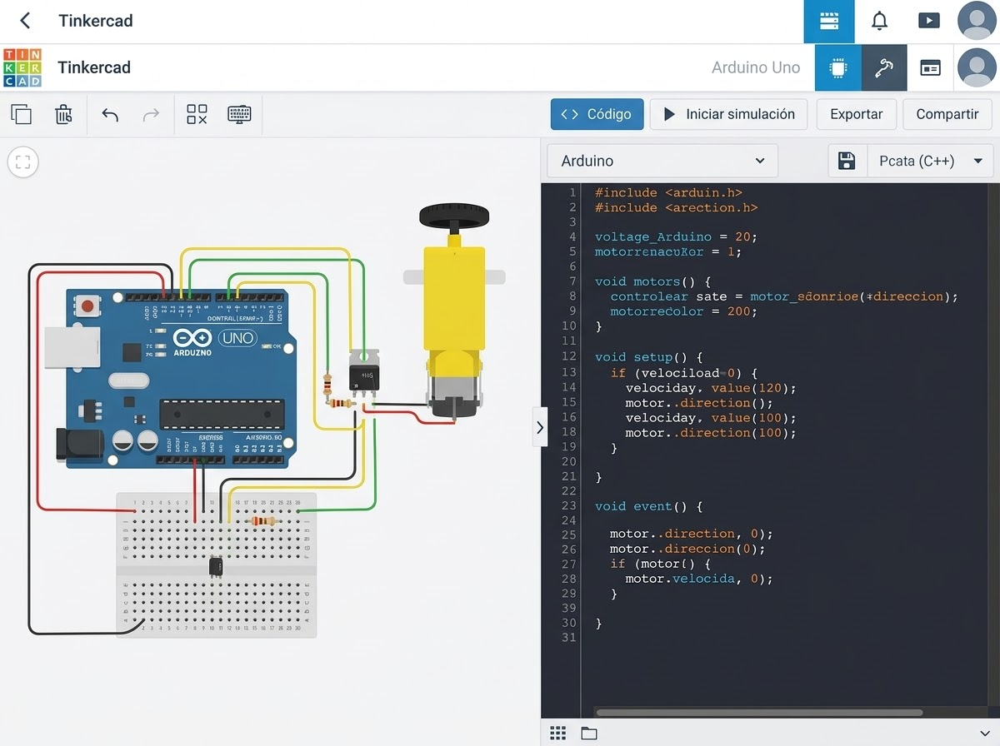
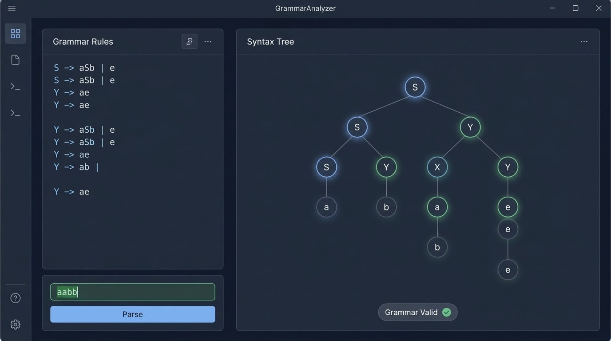
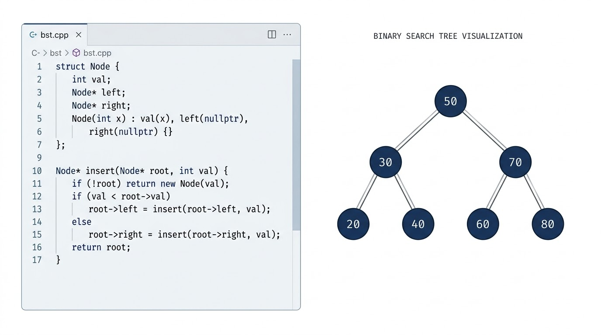
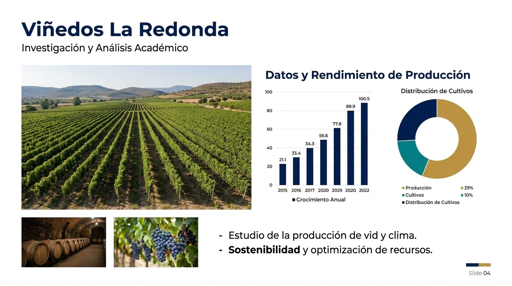
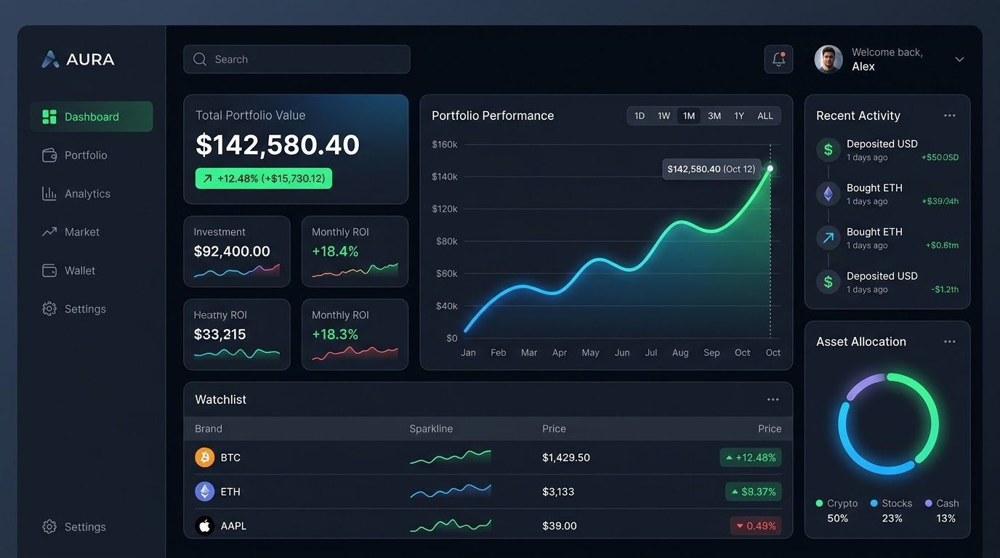
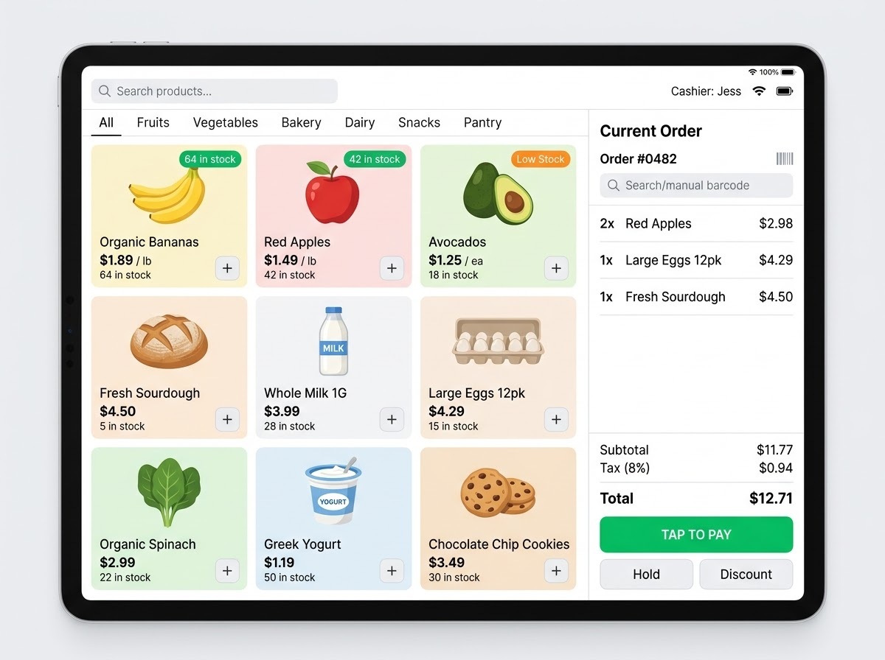

Circuito con Arduino y Hobby Gearmotor
Simulación en Tinkercad de un circuito con un Hobby Gearmotor, controlado con un programa en C++ para Arduino.

Simulación en Tinkercad de un circuito con un Hobby Gearmotor, controlado con un programa en C++ para Arduino.

Analizador de gramáticas formales desarrollado durante la carrera.

Implementaciones de algoritmos que aplican Estructuras de Datos.

Presentación multimedia sobre Viñedos La Redonda, resultado de una investigación académica.

Plataforma integral para la gestión de transacciones financieras y seguimiento de portafolios de inversión.

Sistema de administración de inventario, ventas y catálogo en línea para pequeños comercios.